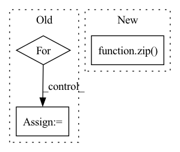

Pattern ID :976

Before Change
groups = min(out_channels, groups)
self.paths = nn.ModuleList()
for k, d in zip(kernel_size, dilation):
p = _get_padding(k, stride, d)
self.paths.append(nn.Sequential(OrderedDict([
("conv", nn.Conv2d(
in_channels, out_channels, kernel_size=k, stride=stride, padding=p,
After Change
stride=stride, groups=groups, drop_block=drop_block, act_layer=act_layer, norm_layer=norm_layer)
self.paths = nn.ModuleList([
ConvBnAct(in_channels, out_channels, kernel_size=k, dilation=d, **conv_kwargs)
for k, d in zip(kernel_size, dilation)])
attn_channels = max(int(out_channels / attn_reduction), min_attn_channels)
self.attn = SelectiveKernelAttn(out_channels, num_paths, attn_channels)
In pattern: SUPERPATTERN
Frequency: 4
Non-data size: 3
Instances
Fragment ID: 2048484
Project Name: alvinwan/nbdt-pytorch-image-models
Commit Name: 9f11b4e8a25495874d84a56d4ca11af191a01324
Time: 2020-02-01
Author: rwightman@gmail.com
File Name: timm/models/conv2d_layers.py
Class Name: SelectiveKernelConv
Method Name: __init__
Parent Class: nn.Module
Fragment ID: 2048483
Project Name: feng-lab/pytorch-image-models
Commit Name: 9f11b4e8a25495874d84a56d4ca11af191a01324
Time: 2020-02-01
Author: rwightman@gmail.com
File Name: timm/models/conv2d_layers.py
Class Name: SelectiveKernelConv
Method Name: __init__
Parent Class: nn.Module
Fragment ID: 2048482
Project Name: keio-bioinformatics/mxfold2
Commit Name: 97079ed64ffd5374169c120e85cd38ec4ed21553
Time: 2019-11-30
Author: satoken@bio.keio.ac.jp
File Name: dnnfold/fold/layers.py
Class Name: CNNUnpairedLayer
Method Name: __init__
Parent Class: nn.Module